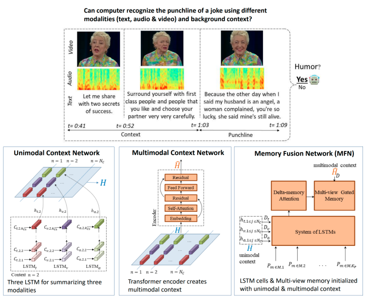
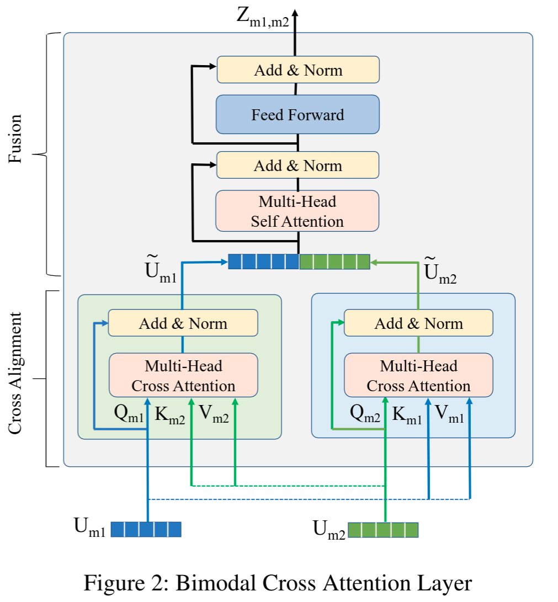
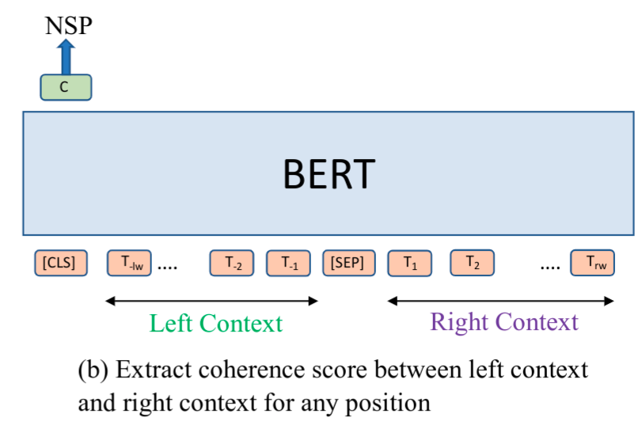
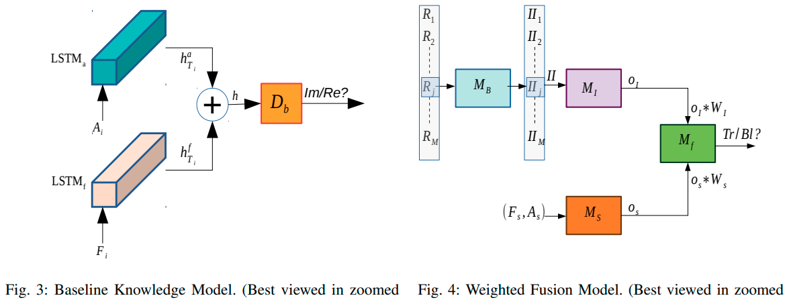

Research Projects
Multimodal Humor Understanding

We introduced UR-FUNNY- the first video dataset for humor detection task. 8257 humorous punchlines are presented, along with the prior sentences that build up their respective contexts. Total duration of the dataset is 90 hours. This dataset has been collected from 1,866 videos featuring 1,741 TED Talks speakers using audience laughter signal. UR-FUNNY opens the door to the research community for studying multimodal cues involved in expressing humor.
Deeveloped Contextual Memory Fusion Network to detect humor from the video utterance. Using this model we ran experiments to understand the importance of each modalities as well as the background context.
Publications: EMNLP-IJCNLP, 2019
Multimodal Transformer for Sentiment Analysis
Transformer based pretrained language models like BERT and XLNet do not have necessary components to accept other modalities like vision and acoustic. We designed Multimodal Adaptation Gate (MAG) that allows BERT and XLNet to accept multimodal nonverbal data during fine-tuning. It does so by generating a shift to internal representation of BERT and XLNet; a shift that is conditioned on the visual and acoustic modalities.
We have achieved superior performance on both CMU-MOSI and CMU-MOSEI datasets (commonly used datasets for multimodal sentiment analysis). On the CMU-MOSI dataset, MAG-XLNet achieves human level multimodal sentiment analysis performance for the first time in the NLP community.
Publications:ACL, 2020

Humor Knowledge Enriched Transformer
Recognizing humor from a video requires understanding the verbal and non-verbal components as well as incorporating the appropriate context and external knowledge. We have designed Humor Knowledge Enriched Transformer (HKT) that can capture the gist of a multimodal humorous expression by integrating the preceding context and external knowledge. We incorporate humor-centric external knowledge into the model by capturing the ambiguity and sentiment present in the language. We encode all the textual, acoustic, visual, and external knowledge separately using Transformer based Encoders, followed by a cross attention layer to exchange information among them.
Publications: AAAI, 2021 (Under Review)

Unsupervised Text Segmentation
Breaking down long text into semantically coherent segments is very useful for downstream applications like summarization and information retrieval. We designed unsupervised text segmentation algorithm named Coherence aware BERT (C-BERT) Tiling that takes advantage of the pre-trained BERT language model to find topical shifts in a document. The next sentence prediction objective of BERT trained on billions of text is used to measure coherence between adjacent text segments. These locally attended coherence scores is utilized to identify the semantic discourses in a document of arbitrary length without learning dataset specific distribution. We establish a new state-of-the-art results in three standard datasets, thus facilitating real-world applications.
Publications: EACL, 2021 (Under Review)

Credibility Understanding
The baseline facial expression pattern can help to understand credibility during real interrogation. In an interrogation game, the interrogator ask baseline questions before the main interrogation. First, we trained a LSTM to model baseline facial expression sequences. Using a transfer learning approach, the pretrained model from the baseline used to extract face embedding during the main interrogation and predict truth vs bluff.
Publications: ACII, 2019
